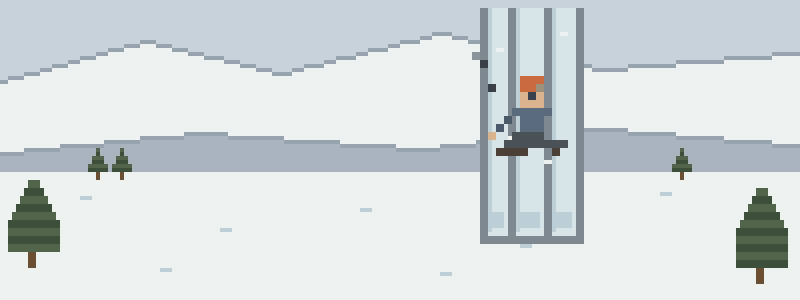

Sharp, frozen, or both
- The tool skates. A sheared placement swings back into your second’s calf: deep, bleeding, and buried under three layers you have to get through. Pressure works the same at ten degrees — your hands are the variable.
- Dinner plate, helmet, silence. A plate off the leader’s swing catches your belayer under the helmet rim. Scalp wounds bleed theatrically; the real question is what her answers sound like twenty minutes from now.
- Dressed to climb, parked at the anchor. Three pitches of standing still in clothes you chose for moving. Belay hypothermia doesn’t announce itself — it just makes you slow, clumsy, and certain you’re fine.
Before the next freeze
Ordered by what the ice actually serves up:
- Bleeding & Wounds — tools, crampons, and falling ice write the wound chapter for you
- Cold Injuries — frostbite and hypothermia are the sport’s ambient conditions
- Shock — blood loss and cold multiply each other — know what that looks like
- Patient Assessment — a head-struck partner is a twenty-minute question, not a yes-or-no
- Evacuation — short days and frozen approaches shrink every option — decide early
Then pressure-test it
Interactive scenarios — one decision at a time, tempting mistakes included, debrief at the end:
- Stop Peeking — direct pressure when your fingers barely work
- Leave It Frozen — refreeze is the one mistake you can’t take back
- The Guy Who’s Fine — the belayer who took ice and says she’s good
The certification question, honestly. “Wilderness First Aid” isn’t a regulated credential. No government body defines what a WFA card means — it means whatever the company that printed it says it means. What counts in front of a patient is whether you can do the work. This course teaches the work, free, and issues a record of completion — not a certificate, and we won’t pretend otherwise. Many ice approaches cross avalanche terrain, and that education (AIARE, AST) is separate, essential, and not in here. If guiding is the path, the AMGA track and its employers expect a current WFR — treat this free course as the medicine half of your homework. If nobody requires you to hold a card, what you need are the skills, not the laminate.
What this is
Fifteen lessons, a 40-question knowledge check, sixteen practice scenarios, a printable field reference card, and a kit checklist. Free, no account, nothing recorded about you, source on GitHub. It teaches decision-making, not hands-on skill — practice the hands-on parts on a real, padded, complaining friend.
Other people who rope up: alpine & multi-pitch climbers · boulderers & crag guides · via ferrata climbers & operators